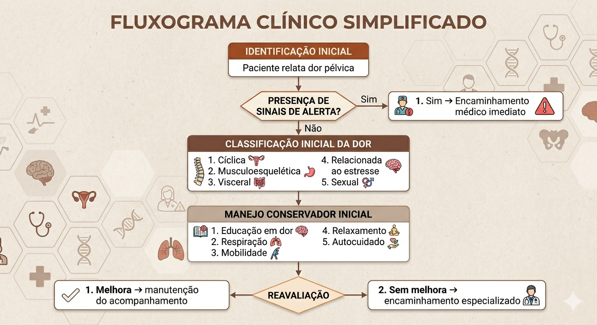

Dor pélvica aguda
Início súbito, geralmente associada a processos infecciosos, inflamatórios ou emergenciais. Duração inferior a 3 meses.
Saúde da mulher
O que é dor pélvica
Pode ser localizada na região inferior do abdômen, pelve ou períneo. É frequentemente associada a alterações ginecológicas, musculoesqueléticas, urinárias, intestinais e emocionais.
Sua apresentação pode ocorrer de forma aguda ou crônica, impactando funcionalidade, qualidade de vida, saúde mental, sono, vida sexual e participação social.
Acessar estudosInício súbito, geralmente associada a processos infecciosos, inflamatórios ou emergenciais. Duração inferior a 3 meses.
Persistência superior a 6 meses. Pode apresentar sensibilização central e estar frequentemente associada a fatores biopsicossociais.
Relacionada ao ciclo menstrual, intensifica-se no período pré-menstrual ou menstrual. Pode estar associada a endometriose e dismenorreia.
Saiba maisPiora ao permanecer sentada ou em determinadas posturas. Pode envolver tensão muscular, dor em região lombar, quadril ou períneo.
Saiba maisDor profunda ou difusa, associada a sintomas urinários ou intestinais, com sensação de pressão pélvica.
Saiba maisDor durante ou após a penetração, medo ou tensão durante o ato sexual e possível impacto emocional.
Saiba maisDor flutuante, piora em períodos de ansiedade ou estresse, com sensação constante de contração muscular.
Saiba maisOs seguintes sinais exigem avaliação prioritária ou encaminhamento imediato.
Saiba maisA avaliação clínica deve considerar não apenas a dor, mas também os impactos físicos, emocionais e funcionais da paciente.
Saiba maisSono, trabalho, atividade física, vida sexual, humor, atividades domésticas e participação social.
Além disso é importante observar: postura, mobilidade lombopélvica, padrão respiratório, tensão abdominal e comportamento de proteção corporal.
Encaminhamento
Cada profissional atua em um aspecto específico da dor pélvica. Identifique o encaminhamento mais adequado para cada situação.
Procure quando houver
Procure quando houver
Procure quando houver
Procure quando houver
